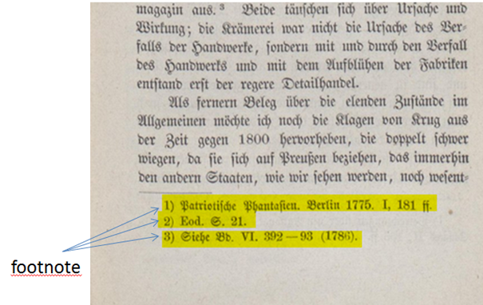

Fußnoten erscheinen im unteren Seitenbereich des Satzspiegels (zuweilen auch außerhalb). Zumeist bilden sie die letzte gedruckte Passage auf der Seite. Nur Bogensignaturen werden üblicherweise noch darunter aufgeführt. Fußnoten sind häufig gezählt und werden dann mit einer Nummer eingeleitet, können aber auch ungezählt erscheinen; sie enden in der Regel mit einem Punkt. Manchmal leiten Separatoren den Fußnotenbereich ein. Fußnoten beziehen sich immer auf Referenzen der betreffenden Seite und sind von Endnoten, die sich auf ganze Abschnitte beziehen, zu unterscheiden.
Lange Fußnotentexte können sich über mehrere Seiten erstrecken. In diesem Fall sind diese Fußnoten als fortlaufende Fußnote auszuzeichnen.
Abbildung: Beispiel: Einfache Fußnoten ohne Referenzzeichen (unnummeriert)

Abbildung: Beispiel: mehrere einfache Fußnoten (nummeriert), eingeleitet mit einer Seperatorlinie
Abbildung: Beispiel: fortlaufende Fußnote